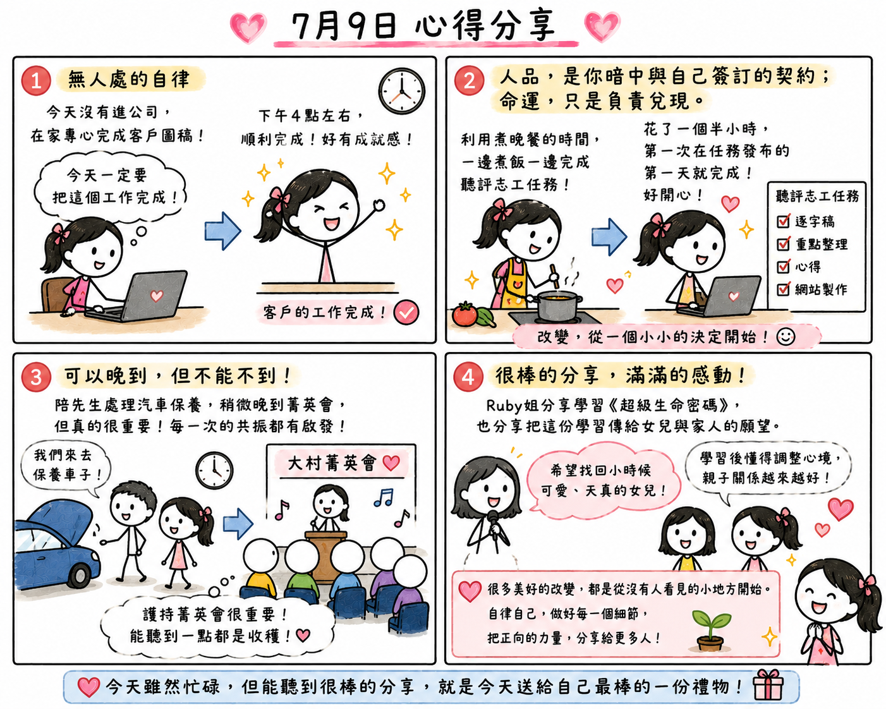

日期：2026/07/09

今天晚上參加大村菁英會，導讀《三世因果知多少》時，有兩句話讓我印象特別深刻。
第一句是：「無人處的自律。」
第二句是：「人品，是你暗中與自己簽訂的契約；命運，只是負責兌現。」
我覺得，這兩句話完全就是我今天生活的寫照。因為昨天客戶下了訂單，所以今天沒有進公司，而是整天待在家裡，專心把客戶需要的圖稿完成。一開始，我就在心裡先做好一個設定：「今天一定要把這個工作完成！」
有了這個目標之後，我整天都很專注，大約下午四點左右，終於順利把所有工作完成。當下真的很有成就感，心情也特別輕鬆。剛好這時候，聽評志工的新任務也發布了。
以前的我，常常都是拖到最後一天、甚至最後一刻才開始做，每次都把自己搞得很緊張，也一直覺得自己在這方面做得不夠好。但是今天，我沒有再拖延，而是利用準備晚餐的時間，一邊煮飯、一邊完成聽評志工。花了一個半小時，就把整個志工任務完成了。這也是我第一次，在任務發布的第一天就完成聽評。完成的那一刻，我真的好開心。
我突然發現，原來改變真的不用一步登天，而是從一個小小的決定開始。導師常說：「哪裡不足，就修復哪裡。」以前我總覺得自己很容易拖延，現在就試著從這個地方開始調整。
更巧的是，今天導讀的內容，第六十頁的標題正是：「細節修得好，福報不會少。」看到這句話，我忍不住笑了，因為真的太呼應今天了！當我願意先把事情安排好、先做好設定，事情就能一件接著一件完成，不但把客戶的工作做好，也完成了志工任務，晚餐也順利準備好了。一整天下來，沒有一直趕時間，也沒有留下太多空窗，心裡真的覺得很踏實。
晚上雖然因為陪先生處理汽車保養的事情，所以到菁英會時稍微晚了一點，但我心裡一直有一個想法：【可以晚到，但不能不到】。因為我一直覺得，護持菁英會是一件很重要的事情，每一位學員都很重要。生活中難免會有一些突發狀況，有時候真的沒辦法準時抵達，但只要有機會，我還是希望能夠到現場。就算只能聽一個小時，甚至半個小時，我都相信，那份共振所帶來的能量，常常會有意想不到的啟發。
今天另一個讓我很感動的，就是 Ruby 姐的分享。她分享自己一路學習《超級生命密碼》的過程，也分享心裡一直有一個願望，就是希望能把這套學習分享給自己的孩子和家人。後來因緣成熟，全家一起參加美國團，也因此讓女兒開始接觸這套系統。
她說，自己的婚姻一直都很順利，所以當女兒遇到感情挫折時，她反而不知道該怎麼安慰、怎麼幫助女兒。聽到這裡，我感受到的，是一位媽媽深深愛著女兒的心。
後來，女兒開始學習《超級生命密碼》，慢慢懂得調整自己的心境，也明白有些人只是人生中的過客，每一次相遇，都是來幫助自己成長的。我也很認同這樣的想法。人生每一個階段，都會遇見不同的人，而每一次相遇，都有值得我們學習的地方。
最讓我感動的是，今天 Ruby 姐分享時，她的女兒咨淇也坐在台下。我一邊聽，一邊心裡想，如果我是她的女兒，看著自己的媽媽站在台上分享這一路走來的故事，我一定會非常感動。
Ruby 姐還說，當初去美國團時，她最大的願望，就是希望找回那個小時候可愛、天真的女兒。沒想到，回來之後，親子關係真的好上加好，女兒也越來越開朗，好像真的找回了她心目中那個最熟悉、最可愛的小女孩。聽到這裡，我心裡真的替她們一家人感到開心。
今天回想一整天，我突然覺得，很多美好的改變，都是從那些沒有人看見的小地方開始。當我們願意在沒有人注意的時候，依然要求自己、自律自己，慢慢把每一個細節做好，不只是事情會越做越順利，也有機會把這份正向的力量，分享給身邊更多的人。
我想，今天雖然我也是超級無敵忙碌的一天，但能聽到很棒的分享，就是今天送給自己最棒的一份禮物。